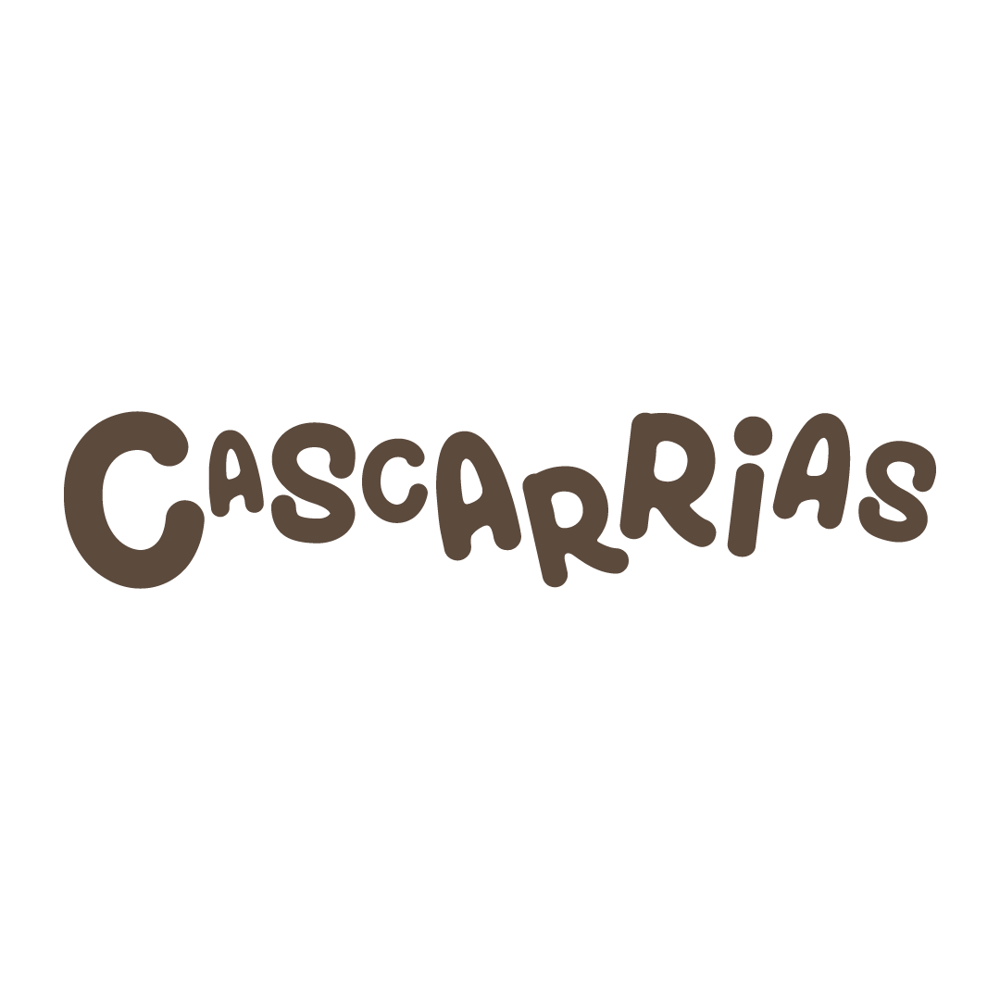

La Pena El Clavo
La Pena del Clavo es una piedra pequena en el borde de un camino. Su valor no esta en el tamano, sino en la memoria colectiva que activa.

Entierate de novedades y publicaciones recientes del proyecto.
La Pena del Clavo es una piedra pequena en el borde de un camino. Su valor no esta en el tamano, sino en la memoria colectiva que activa.
Historia popular de un mozo sorprendido robando peras en un terreno comunal, convertida en relato sobre normas vecinales y aprendizaje comunitario.
Un bloque de roca desprendido de un acantilado yesoso y las narraciones que explican su presencia en el paisaje de la zona.